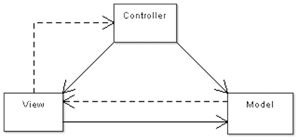
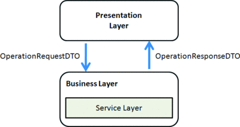

Software Design in

Paul Dragoonis
- From Glasgow (a weegie :-)
- Full-Stack Software Consultant
- @dr4goonis / paul@dragoonis.com
Involved with
- PHP core / extensions, php.net (modernisation)
- PHP-FIG
- Lead developer of PPI Framework Engine (ppi.io)
Talk Topics
Migrating to PHP7
Factories
Controller Design
Framework Design
Value Objects
Data Transfer Objects
UUID vs sequencing
Starting to design
Requirements gathering. Talk to the client and factor out the use cases.
What is your program? What will it not do? What problem is it trying to solve?
Starting to design
Compose a narrative of the individual use cases. (helpful for BDD (Behat))
Go through the narrative and highlight nouns (person, place, thing), as classes
verbs (actions), as methods / behaviours (PHPSpec helps with this)
Maybe create a UML diagram - it helps you visualise the system and its relationships
Factor out commonalities - create hierarchies (base types)
Things to avoid, when designing PHP systems
putting things into your composer post-install-scripts that boot up your app’s kernel
loads services and dependencies that aren't loaded yet (redis server doesn't exist)
Moving to PHP7
vagrant images php7dev(https://github.com/rlerdorf/php7dev)
docker images for any version you like
set them up at different hostnames
Scan it
Scan your software with PHAN (https://github.com/etsy/phan)
Test it
manual, unit, integration, acceptance, end-to-end tests
Benchmark it
sudo ab -n 10000 -c 100 https://php5.myapp.com
sudo ab -n 10000 -c 100 https://php7.myapp.com
Designing PHP Apps In Frameworks
Controllers are easy to mess up, create high technical debt
Use Controller Factories - don't use ServiceLocator or Container
ZF2 Controller Factory
namespace MyModule/ControllerFactory;
use \Zend\ServiceManager\FactoryInterface;
use \Zend\ServiceManager\ServiceLocatorInterface;
class MyControllerFact implements FactoryInterface
{
public function createService(ServiceLocatorInterface $serviceLocator) {
$sm = $serviceLocator->getServiceLocator();
$depA = $sm->get('depA');
$depB = $sm->get('depB');
$controller = new \MyModule\Controller\MyController($depA, $depB);
return $controller;
}
}
SF2 Controller Factory
// app/config/services.php
$container->setDefinition('app.hello_controller', new Definition(
'AppBundle\Controller\HelloController',
array(new Reference('request'), new Reference('templating'))
));
# app/config/services.yml
services:
app.hello_controller:
class: AppBundle\Controller\HelloController
arguments: ['@request_stack', '@templating']
DI Controller Factory
class HelloController
{
public function indexAction(Request $request, Templating $tpl)
{
$vars = $request->post;
$name = $vars->name;
return $tpl->render('....', compact('name'));
}
}
DI Controllers - Benefits
You can mock out your whole system, and test the controller + templating layer
Without needing to use Selenium
Controllers -> Actions
BlogController::indexAction(), BlogController::updateAction(), BlogController::deleteAction()
BlogIndexAction, BlogUpdateAction, BlogDeleteAction
Designing with Factories
Simple Factory
The biggest value in the factory pattern is that it can encapsulate what would normally be a lot of object setup into a single, simple method call.
Simple Factory - static call
<?php
class VehicleFactory
{
public static function build(string $make, string $model, string $color) : VehicleInterface {
$vehicle = new Vehicle;
// vehicle needs a chassis which is produced by another factory
$vehicle->addPart(VehicleChassisFactory::build($make, $model));
// needs an engine built by someone else
$vehicle->addPart(VehicleEngineFactory::build($make, $model));
return $vehicle;
}
}
// build a new white VW Amarok
$myCar = VehicleFactory::build("Volkswagon", "Astra", "white");
$myCar->drive();
Abstract Factory - Interface
<?php
interface VehicleFactoryInterface
{
public function build(VehicleInterface $vehicle) : VehicleInterface;
}
Abstract Method - With Factory Method
<?php
abstract class VehicleFactory implements VehicleFactoryInterface
{
abstract protected $vehicle;
abstract protected function createEngine(string $make, string $model) : VehicleEngineInterface;
abstract protected function createChassis(string $make, string $model) : VehicleChassisInterface;
public function build(VehicleInterface $vehicle) : VehicleInterface
{
$make = $vehicle->getMake();
$model = $vehicle->getModel();
$vehicle->addPart($this->createEngine($make, $model));
$vehicle->addPart($this->createChassis($make, $model));
return $this->vehicle;
}
}
<?php
class CreateVehiclePage
{
private $vehicleFactory;
public function __construct(TractorVehicleFactory $factory)
{
$this->vehicleFactory = $factory;
}
// or
public function __construct(BoatVehicleFactory $factory)
{
$this->vehicleFactory = $factory;
}
public function build($make, $model)
{
return $this->vehicleFactory->build(new Vehicle($make, $model));
}
}
Factory Method
<?php
class Vehicle
{
public function __construct($make, $model) { .. }
public function buildBoat()
{
$vehicle = new Vehicle($this->make, $this->model);
$factory = new VehicleBoatFactory();
$boat = $factory->build($vehicle);
return $boat;
}
public function buildTractor($make, $model)
{
$vehicle = new Tractor($this->make, $this->model);
$factory = new VehicleTractorFactory();
$tractor = $factory->build($vehicle);
return $tractor;
}
}
MVC was okay
but it didn't really fit what we're doing

ADR
Action -> Domain -> Responder

ADR Structure
Action/
BlogIndexAction.php
BlogCreateAction.php
Domain/
# Model, Gateway, Mapper, Entity, Collection, Service, etc.
Responder/
BlogIndexResponder.php
BlogCreateResponder.php
html/
index.html.php
create.html.php
json/
index.json.php
read.json.php
ADR Action
<?php
use Framework\Action;
class BlogCreateAction extends Action
{
protected $request;
protected $domain;
protected $responder;
public function __construct(
Request $request,
BlogService $domain,
BlogCreateResponder $responder
) {
$this->request = $request;
$this->domain = $domain;
$this->responder = $responder;
}
?>ADR Action
<?php
public function __invoke()
{
// is this a POST request?
if ($this->request->isPost()) {
$this->domain->createBlogPost($this->request->getPost());
} else {
// not a POST request, use default values
$blog = $this->domain->getDefault();
}
// set data into the response
$this->responder->setData(array('blog' => $blog));
$this->responder->__invoke();
}
}ADR Responder
<?php
use Framework\Responder;
class BlogCreateResponder extends Responder
{
// $this->response is the actual response object, or a response descriptor
// $this->view is a view or template system
public function __invoke()
{
// is there an ID on the blog instance?
if ($this->data->blog->id) {
// redirect to editing.
$this->response->setRedirect('/blog/edit/{$blog->id}');
} else {
// no, which means it has not been saved yet.
// show the creation form with the current response data.
$this->response->setContent($this->view->render(
'create.html.php',
$this->data
));
}
}
}Learn more
https://github.com/pmjones/adr
Value Objects - Immutability
Benefits of Immutability:
immutable objects are simpler to create, test, and use
using them is side-effect free
Vehicle Without Value Objects
<?php
class Vehicle implements VehicleInterface
{
private $make;
private $model;
public function __construct(string $make, string $model)
{
$allowedList = [....];
if(!in_array($make, $allowedList)) {
throw new \InvalidArgumentException('This is not a valid vehicle make');
}
$allowedList = [....];
if(!in_array($model, $allowedList)) {
throw new \InvalidArgumentException('This is not a valid vehicle model');
}
$this->make = $make;
$this->model = $model;
}
}
Boat Vehicle Without Value Objects
<?php
class Boat extends Vehicle
{
private $make;
private $model;
public function __construct(string $make, string $model)
{
$allowedList = [....];
if(!in_array($make, $allowedList)) {
throw new \InvalidArgumentException('This is not a valid boat make');
}
$allowedList = [....];
if(!in_array($model, $allowedList)) {
throw new \InvalidArgumentException('This is not a valid boat model');
}
$this->make = $make;
$this->model = $model;
}
}
Value Object - VehicleMake
<?php
class VehicleMake
{
private $make;
public function __construct(string $make)
{
$allowedList = [....];
if(!in_array($make, $allowedList)) {
throw new \InvalidArgumentException('This is not a valid vehicle make');
}
$this->make = $make;
}
public function getValue() : string
{
return $this->make;
}
}
Vehicle With Value Objects
<?php
class Vehicle implements VehicleInterface
{
private $make;
private $model;
public function __construct(VehicleMake $make, VehicleModel $model)
{
$this->make = $make;
$this->model = $model;
}
}
$make = new VehicleMake("Mercedes");
$model = new VehicleModel("Benz");
$vehicle = new Vehicle($make, $model);
DTO - Data Transfer Object

DTO
DTOs do not contain any business logic, they are just hydrated PHP objects with types
They are efficient to properly expose domain data via REST like services to a JavaScript client.
You should not expose your Domain Model as-is over a public interface, such as a REST API.
That is why you should use Data Transfer Objects (DTOs)
You can send DTO’s into battle with the templating layer.
You can ask Doctrine2 to hydrate your DTO's for you
Doctrine DTO
<?php
$query = $em->createQuery('SELECT NEW CustomerDTO(c.name, e.email, a.city) FROM Customer c JOIN c.email e JOIN c.address a');
UUIDs over Auto Increment
A UUID (Universal Unique Identifier) is a 128-bit number
123e4567-e89b-12d3-a456-426655440000
Why Auto Increment is no good
Created a blocking DB operation
Your object never has a valid ID until persisted
Your object does not work without the DB connected to it providing IDs
You need to persist, then read, then go persist, then read again.
You can generate all this up front and populate your objects and then persist them.
UUID Has Versions
https://github.com/ramsey/uuid
// Generate a version 1 (time-based) UUID object
$uuid1 = Uuid::uuid1();
echo $uuid1->toString() . "\n"; // i.e. e4eaaaf2-d142-11e1-b3e4-080027620cdd
// Generate a version 3 (name-based and hashed with MD5) UUID object
$uuid3 = Uuid::uuid3(Uuid::NAMESPACE_DNS, 'php.net');
echo $uuid3->toString() . "\n"; // i.e. 11a38b9a-b3da-360f-9353-a5a725514269
// Generate a version 4 (random) UUID object
$uuid4 = Uuid::uuid4();
echo $uuid4->toString() . "\n"; // i.e. 25769c6c-d34d-4bfe-ba98-e0ee856f3e7a
// Generate a version 5 (name-based and hashed with SHA1) UUID object
$uuid5 = Uuid::uuid5(Uuid::NAMESPACE_DNS, 'php.net');
echo $uuid5->toString() . "\n"; // i.e. c4a760a8-dbcf-5254-a0d9-6a4474bd1b62
UUID Example
class User
{
public static function create()
{
$this->id = Uuid4();
}
}
class UserImage
{
private $userId;
public function __construct(Uuid $userId)
{
$this->userId = $userId;
}
public function createImage($imagePath)
{
$this->imageStorage->create($userId, $imagePage);
}
}
Thank you Glasgow!
- @dr4goonis / paul@dragoonis.com
- Available for hire, get in touch!